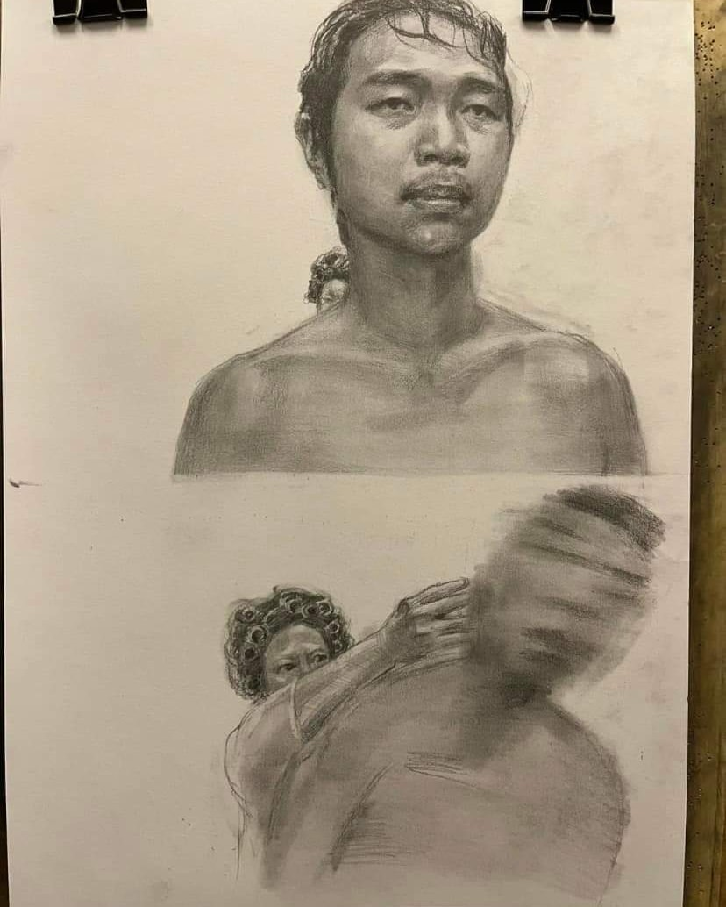
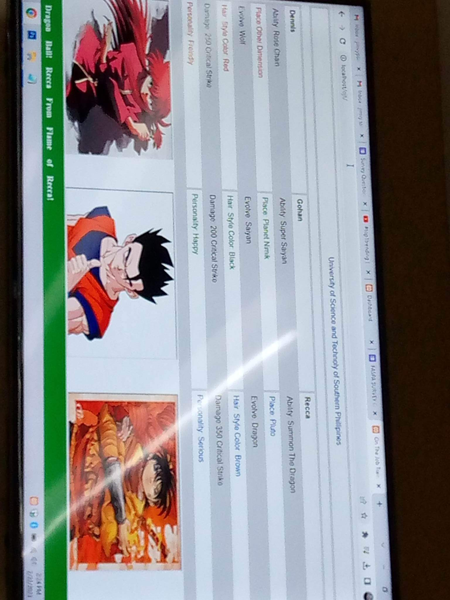
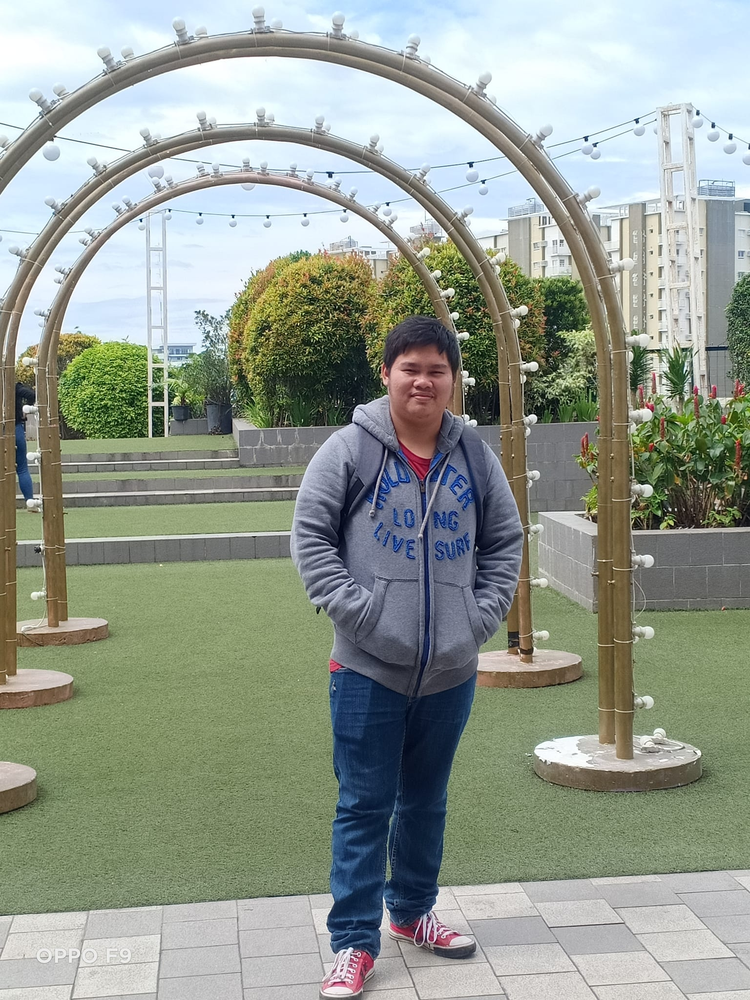

my work



.jpg)
LET MAKE YOUR DREAM WEBSITE
TOGETHER INTO REALITY.
.png)
I am Cresmar Jade S. Mercedes, an aspiring IT st currently pursuing my passion for technology at USTP Jasaan Campos. My journey in the world of education began at Jasaan Senior High School, where I gained a strong foundation. Prior to that, I thrived academically during my junior high years at Jasaan National High School. My educational roots trace back to Kimaya Elementary School, where I took my first steps towards knowledge and personal growth.
I invite you to explore my portfolio, which showcases my academic and professional achievements, projects, and aspirations in the field of Information Technology. It is a testament to my dedication and commitment to excel in this dynamic and ever-evolving industry.
I possess a versatile skill set that allows me to proficiently code and develop web applications using a combination of HTML, CSS, JavaScript, and PHP, showcasing my expertise in front-end and back-end web development.
I specialize in meticulously crafting and transforming photos and videos to impeccably align with your unique aesthetic preferences and vision, ensuring that every detail is perfectly enhanced and polished to elevate your creative projects.
I excel in the art of painting, showcasing a versatile range of skills and a deep understanding of color, composition, and technique. My portfolio is a testament to my ability to capture emotions, stories, and beauty on canvas, whether it's through vibrant abstracts, realistic portraits, or captivating landscapes.